Maven 是一个项目管理工具,使用Maven可以解决jar包冲突，简化项目的单元测试、打包、生成报表，甚至帮你部署……
介绍
什么是Maven
Maven 的正确发音是[mevən],而不是“马瘟”以及其他什么瘟。Maven 在美国是一个口语化的词语,代表专家、内行的意思。
一个对 Maven 比较正式的定义是这么说的:Maven 是一个项目管理工具,它包含了一个项目对象模型 (POM:Project Object Model),一组标准集合,一个项目生命周期(Project Lifecycle),一个依赖管理系统(Dependency Management System), 和用来运行定义在生命周期阶段(phase)中插件(plugin)目标(goal)的逻辑。
Maven能解决什么问题
可以用更通俗的方式来说明。我们知道,项目开发不仅仅是写写代码而已,期间会伴随着各种必不可少的事情要做,下面列举几个感受一下:
1、我们需要引用各种 jar 包,尤其是比较大的工程,引用的 jar 包往往有几十个乃至上百个, 每用到一种 jar 包,都需要手动引入工程目录,而且经常遇到各种让人抓狂的 jar 包冲突,版本冲突。
2、我们辛辛苦苦写好了 Java 文件,可是只懂 0 和 1 的白痴电脑却完全读不懂,需要将它编译成二进制字节码。好歹现在这项工作可以由各种集成开发工具帮我们完成,Eclipse、IDEA 等都可以将代码即时编译。当然,如果你嫌生命漫长,何不铺张,也可以用记事本来敲代码,然后用 javac 命令一个个地去编译,逗电脑玩。
3、世界上没有不存在 bug 的代码,计算机喜欢 bug 就和人们总是喜欢美女帅哥一样。为了追求美为了减少 bug,因此写完了代码,我们还要写一些单元测试,然后一个个的运行来检验代码质量。
4、再优雅的代码也是要出来卖的。们后面还需要把代码与各种配置文件、资源整合到一起,定型打包,如果是 web 项目,还需要将之发布到服务器,供人蹂躏。
试想,如果现在有一种工具,可以把你从上面的繁琐工作中解放出来,能帮你构建工程,管理 jar包,编译代码,还能帮你自动运行单元测试,打包,生成报表,甚至能帮你部署项目,生成 Web 站点,你会心动吗?Maven 就可以解决上面所提到的这些问题。
Maven 的优势
前面我们通过 Web 阶段项目,要能够将项目运行起来,就必须将该项目所依赖的一些 jar 包添加到工程中,否则项目就不能运行。试想如果具有相同架构的项目有十个,那么我们就需要将这一份 jar包复制到十个不同的工程中。我们一起来看一个 CRM 项目的工程大小。原因主要是因为上面的 WEB 程序要运行,我们必须将项目运行所需的 Jar 包复制到工程目录中,从而导致了工程很大。
同样的项目,如果我们使用 Maven 工程来构建,会发现总体上工程的大小会少很多。
Maven的典型作用
依赖管理
Maven 的一个核心特性就是依赖管理。当我们涉及到多模块的项目(包含成百个模块或者子项目),管理依赖就变成一项困难的任务。Maven 展示出了它对处理这种情形的高度控制。
传统的 WEB 项目中,我们必须将工程所依赖的 jar 包复制到工程中,导致了工程的变得很大。那么maven 工程是如何使得工程变得很少呢?
分析如下:
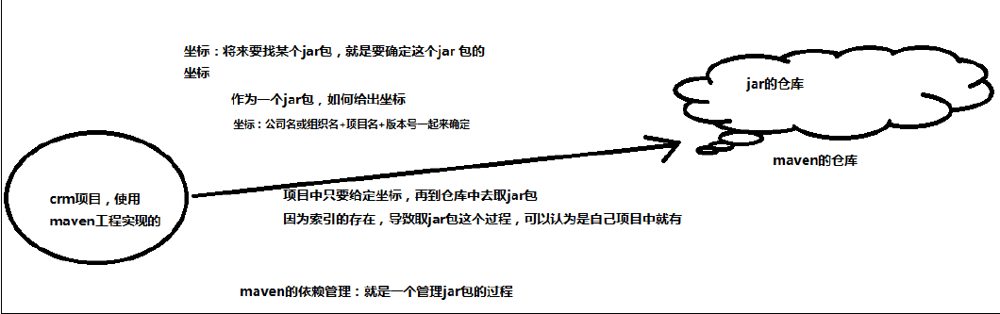
通过分析发现: maven 工程中不直接将 jar 包导入到工程中,而是通过在 pom.xml 文件中添加所需 jar包的坐标,这样就很好的避免了 jar 直接引入进来,在需要用到 jar 包的时候,只要查找 pom.xml 文件,再通过 pom.xml 文件中的坐标,到一个专门用于”存放 jar 包的仓库”(maven 仓库)中根据坐标从而找到这些 jar 包,再把这些 jar 包拿去运行。
那么问题来了：
第一:”存放 jar 包的仓库”长什么样?
第二:通过读取 pom.xml 文件中的坐标,再到仓库中找到 jar 包,会不会很慢?从而导致这种方式不可行!
第一个问题:存放 jar 包的仓库长什么样,这一点我们后期会分析仓库的分类,也会带大家去看我们的本地的仓库长什么样。
第二个问题:通过 pom.xml 文件配置要引入的 jar 包的坐标,再读取坐标并到仓库中加载 jar 包,这样我们就可以直接使用 jar 包了,为了解决这个过程中速度慢的问题,maven 中也有索引的概念,通过建立索引,可以大大提高加载 jar 包的速度,使得我们认为 jar 包基本跟放在本地的工程文件中再读取出来的速度是一样的。这个过程就好比我们查阅字典时,为了能够加快查找到内容,书前面的目录就好比是索引,有了这个目录我们就可以方便找到内容了,一样的在Maven 仓库中有了索引我们就可以认为可以快速找到 jar 包。
项目的一键构建
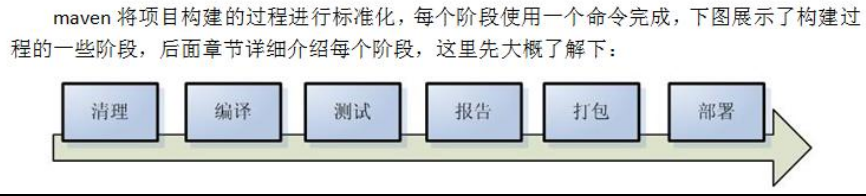
一键构建——指的是整个构建过程,使用 maven 一个命令可以轻松完成整个工作。
Maven使用
Maven安装
下载安装找百度；下简介Maven的目录结构：
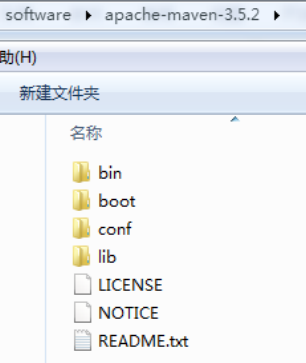
bin:存放了 maven 的命令,比如我们前面用到的 mvn tomcat:run
boot:存放了一些 maven 本身的引导程序,如类加载器等
conf:存放了 maven 的一些配置文件,如setting.xml文件
lib:存放了 maven 本身运行所需的一些 jar 包
Maven仓库
maven 的工作需要从仓库下载一些 jar 包,如下图所示,本地的项目 A、项目 B 等都会通过 maven软件从远程仓库(可以理解为互联网上的仓库)下载 jar 包并存在本地仓库,本地仓库 就是本地文件夹,当第二次需要此 jar 包时则不再从远程仓库下载,因为本地仓库已经存在了,可以将本地仓库理解为缓存,有了本地仓库就不用每次从远程仓库下载了。
仓库分类
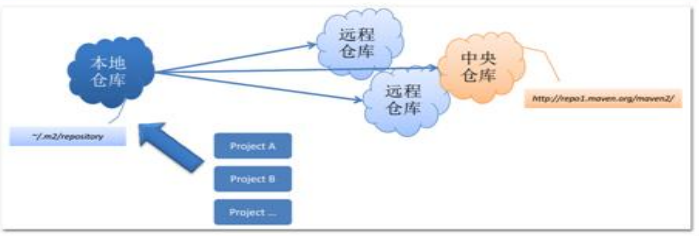
本地仓库
用来存储从远程仓库或中央仓库下载的插件和 jar 包,项目使用一些插件或 jar 包,优先从本地仓库查找默认本地仓库位置在 ${user.dir}/.m2/repository,${user.dir}表示 windows 用户目录。
远程仓库
如果本地需要插件或者 jar 包,本地仓库没有,默认去远程仓库下载。远程仓库可以在互联网内也可以在局域网内。
中央仓库
在 maven 软件中内置一个远程仓库地址 http://repo1.maven.org/maven2 ,它是中央仓库,服务于整个互联网,它是由 Maven 团队自己维护,里面存储了非常全的 jar 包,它包含了世界上大部分流行的开源项目构件。
本地仓库配置
在 MAVE_HOME/conf/settings.xml 文件中配置本地仓库位置(maven 的安装目录下):
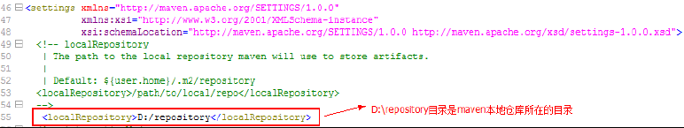
全局 setting 与用户 setting
maven 仓库地址、私服等配置信息需要在 setting.xml 文件中配置,分为全局配置和用户配置。
在 maven 安装目录下的有conf/setting.xml文件,此setting.xml文件用于 maven 的所有 project项目,它作为 maven 的全局配置。
如需要个性配置则需要在用户配置中设置,用户配置的 setting.xml 文件默认的位置在: ${user.dir}/.m2/settings.xml 目录中,${user.dir} 指 windows 中的用户目录。
maven 会先找用户配置,如果找到则以用户配置文件为准,否则使用全局配置文件。
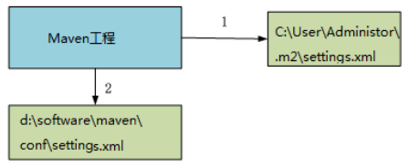
Maven工程
目录结构
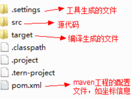
作为一个 maven 工程,它的 src 目录和 pom.xml 是必备的。
进入 src 目录后,我们发现它里面的目录结构如下:
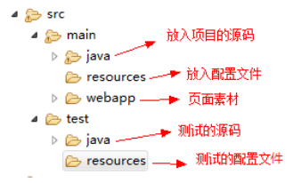
src/main/java —— 存放项目的.java 文件src/main/resources —— 存放项目资源文件,如 spring, hibernate 配置文件src/test/java —— 存放所有单元测试.java 文件,如 JUnit 测试类src/test/resources —— 测试资源文件target —— 项目输出位置,编译后的 class 文件会输出到此目录pom.xml——maven 项目核心配置文件
注意:如果是普通的 java 项目,那么就没有 webapp 目录。
工程的运行
进入 maven 工程目录(当前目录有pom.xml文件),运行 tomcat:run 命令。

根据上边的提示信息,通过浏览器访问:http://localhost:8080/maven-helloworld/
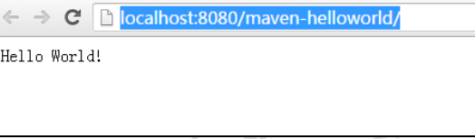
问题处理
如果本地仓库配置错误会报下边的错误
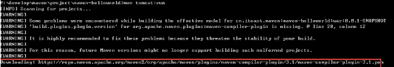
分析:
maven 工程运行先从本地仓库找 jar 包,本地仓库没有再从中央仓库找,上边提示 downloading…表示 从中央仓库下载 jar,由于本地没有联网,报错。
解决:
在 maven 安装目录的 conf/setting.xml 文件中配置本地仓库,
参考:
“maven 仓库/配置本地仓库章节”。
常用命令
compile
mvn compile：compile 是 maven 工程的编译命令,作用是将src/main/java下的文件编译为 class 文件输出到 target目录下。
查看 target 目录,class 文件已生成,编译完成。
test
mvn test：会执行 src/test/java 下的单元测试类。
clean
mvn clean： 是 maven 工程的清理命令,执行 clean 会删除 target 目录及内容。
package
mvn package：package 是 maven 工程的打包命令,对于 java 工程执行 package 打成 jar 包,对于 web 工程打成 war包。
install
mvn install：install 是 maven 工程的安装命令,执行 install 将 maven 打成 jar 包或 war 包发布到本地仓库。
生命周期
maven 对项目构建过程分为三套相互独立的生命周期,请注意这里说的是“三套”,而且“相互独立”,这三套生命周期分别是:
Clean Lifecycle 在进行真正的构建之前进行一些清理工作。Default Lifecycle 构建的核心部分,编译,测试,打包,部署等等。Site Lifecycle 生成项目报告,站点,发布站点。
概念模型
Maven 包含了一个项目对象模型 (Project Object Model),一组标准集合,一个项目生命周期(Project Lifecycle),一个依赖管理系统(Dependency Management System),和用来运行定义在生命周期阶段(phase)中插件(plugin)目标(goal)的逻辑。
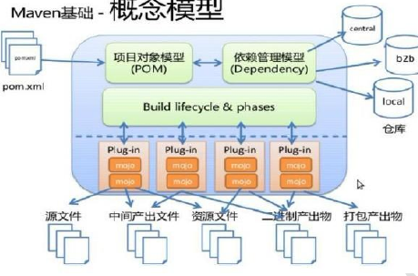
项目对象模型 (Project Object Model)
一个 maven 工程都有一个 pom.xml 文件,通过 pom.xml 文件定义项目的坐标、项目依赖、项目信息、
插件目标等。
依赖管理系统(Dependency Management System)
通过 maven 的依赖管理对项目所依赖的 jar 包进行统一管理。
比如:项目依赖 junit4.9,通过在 pom.xml 中定义 junit4.9 的依赖即使用 junit4.9,如下所示是 junit4.9
的依赖定义:
<!-- 依赖关系 -->
<dependencies>
<!-- 此项目运行使用 junit,所以此项目依赖 junit -->
<dependency>
<!-- junit 的项目名称 -->
<groupId>junit</groupId>
<!-- junit 的模块名称 -->
<artifactId>junit</artifactId>
<!-- junit 版本 -->
<version>4.9</version>
<!-- 依赖范围:单元测试时使用 junit -->
<scope>test</scope>
</dependency>
项目生命周期(Project Lifecycle)
使用 maven 完成项目的构建,项目构建包括:清理、编译、测试、部署等过程,maven 将这些
过程规范为一个生命周期,如下所示是生命周期的各各阶段:
maven 通过执行一些简单命令即可实现上边生命周期的各各过程,比如执行 mvn compile 执行编译、执行 mvn clean 执行清理。
标准集合
maven 将整个项目管理过程定义一组标准,比如:通过 maven 构建工程有标准的目录结构,有标准的生命周期阶段、依赖管理有标准的坐标定义等。
插件(plugin)和目标(goal)
maven 管理项目生命周期过程都是基于插件完成的。
idea开发maven项目
先贴我写webapp时的pox.xml再细讲:
<?xml version="1.0" encoding="UTF-8"?>
<project xmlns="http://maven.apache.org/POM/4.0.0" xmlns:xsi="http://www.w3.org/2001/XMLSchema-instance"
xsi:schemaLocation="http://maven.apache.org/POM/4.0.0 http://maven.apache.org/xsd/maven-4.0.0.xsd">
<modelVersion>4.0.0</modelVersion>
<groupId>zhangkx</groupId>
<artifactId>XXZtravel</artifactId>
<version>1.0-SNAPSHOT</version>
<packaging>war</packaging>
<name>XXZtravel Maven Webapp</name>
<!-- FIXME change it to the project's website -->
<url>http://www.example.com</url>
<properties>
<project.build.sourceEncoding>UTF-8</project.build.sourceEncoding>
<maven.compiler.source>1.7</maven.compiler.source>
<maven.compiler.target>1.7</maven.compiler.target>
</properties>
<dependencies>
<dependency>
<groupId>junit</groupId>
<artifactId>junit</artifactId>
<version>4.11</version>
<scope>test</scope>
</dependency>
<!--这次servlet和jstl、el我只引入了这一个包 试试可行不，下面三个才是应该引入的包-->
<!-- JSTL -->
<dependency>
<groupId>javax.servlet</groupId>
<artifactId>jstl</artifactId>
<version>1.2</version>
</dependency>
<!-- Servlet核心包 -->
<dependency>
<groupId>javax.servlet</groupId>
<artifactId>javax.servlet-api</artifactId>
<version>4.0.1</version>
<scope>provided</scope>
</dependency>
<!--JSP -->
<dependency>
<groupId>javax.servlet.jsp</groupId>
<artifactId>jsp-api</artifactId>
<version>2.2</version>
<scope>provided</scope>
</dependency>
<!--servlet\jsp\jstl-->
<dependency>
<groupId>javax.servlet.jsp.jstl</groupId>
<artifactId>javax.servlet.jsp.jstl-api</artifactId>
<version>1.2.2</version>
<scope>provided</scope>
</dependency>
<!--mysql-->
<dependency>
<groupId>mysql</groupId>
<artifactId>mysql-connector-java</artifactId>
<version>8.0.19</version>
<scope>compile</scope>
</dependency>
<!--jdbcTemplate-->
<dependency>
<groupId>org.springframework</groupId>
<artifactId>spring-jdbc</artifactId>
<version>4.3.26.RELEASE</version>
</dependency>
<!--beanUtils-->
<dependency>
<groupId>commons-beanutils</groupId>
<artifactId>commons-beanutils</artifactId>
<version>1.9.4</version>
</dependency>
<!--jackson-->
<dependency>
<groupId>com.fasterxml.jackson.core</groupId>
<artifactId>jackson-databind</artifactId>
<version>2.9.10.3</version>
</dependency>
<!--mail接口为啥两个？-->
<dependency>
<groupId>javax.mail</groupId>
<artifactId>mail</artifactId>
<version>1.4.7</version>
</dependency>
<dependency>
<groupId>com.sun.mail</groupId>
<artifactId>javax.mail</artifactId>
<version>1.6.2</version>
</dependency>
<dependency>
<!--jedis-->
<groupId>redis.clients</groupId>
<artifactId>jedis</artifactId>
<version>3.2.0</version>
</dependency>
<!--druid-->
<dependency>
<groupId>com.alibaba</groupId>
<artifactId>druid</artifactId>
<version>1.1.21</version>
</dependency>
</dependencies>
<build>
<finalName>XXZtravel</finalName>
<pluginManagement><!-- lock down plugins versions to avoid using Maven defaults (may be moved to parent pom) -->
<plugins>
<plugin>
<artifactId>maven-clean-plugin</artifactId>
<version>3.1.0</version>
</plugin>
<!-- see http://maven.apache.org/ref/current/maven-core/default-bindings.html#Plugin_bindings_for_war_packaging -->
<plugin>
<artifactId>maven-resources-plugin</artifactId>
<version>3.0.2</version>
</plugin>
<plugin>
<artifactId>maven-compiler-plugin</artifactId>
<version>3.8.0</version>
</plugin>
<plugin>
<artifactId>maven-surefire-plugin</artifactId>
<version>2.22.1</version>
</plugin>
<plugin>
<artifactId>maven-war-plugin</artifactId>
<version>3.2.2</version>
</plugin>
<plugin>
<artifactId>maven-install-plugin</artifactId>
<version>2.5.2</version>
</plugin>
<plugin>
<artifactId>maven-deploy-plugin</artifactId>
<version>2.8.2</version>
</plugin>
</plugins>
</pluginManagement>
</build>
</project>
添加坐标
每个 maven 工程都需要定义本工程的坐标,坐标是 maven 对 jar 包的身份定义,入门程序的坐标定义如下:
<!--项目名称,定义为组织名+项目名,类似包名-->
<groupId>zhangkx</groupId>
<!-- 模块名称 -->
<artifactId>XXZtravel</artifactId>
<!-- 当前项目版本号,snapshot 为快照版本即非正式版本,release 为正式发布版本 -->
<version>0.0.1-SNAPSHOT</version>
<packaging>war</packaging>
<!-- jar:执行 package 会打成 jar 包 -->
<!-- war:执行 package 会打成 war 包 -->
<!-- pom:用于 maven 工程的继承,通常父工程设置为 pom -->
依赖范围
A 依赖 B,需要在 A 的 pom.xml 文件中添加 B 的坐标,添加坐标时需要指定依赖范围,依赖范围包括:
compile:编译范围,指 A 在编译时依赖 B,此范围为默认依赖范围。编译范围的依赖会用在编译、测试、运行,由于运行时需要所以编译范围的依赖会被打包。
provided:provided 依赖只有在当 JDK 或者一个容器已提供该依赖之后才使用, provided 依赖在编译和测试时需要,在运行时不需要,比如:servlet api 被 tomcat 容器提供。
runtime:runtime 依赖在运行和测试系统的时候需要,但在编译的时候不需要。比如:jdbc的驱动包。由于运行时需要所以 runtime 范围的依赖会被打包。
test:test 范围依赖 在编译和运行时都不需要,它们只有在测试编译和测试运行阶段可用, 比如:junit。由于运行时不需要所以 test 范围依赖不会被打包。
system:system 范围依赖与 provided 类似,但是你必须显式的提供一个对于本地系统中 JAR文件的路径,需要指定 systemPath 磁盘路径,system 依赖不推荐使用。
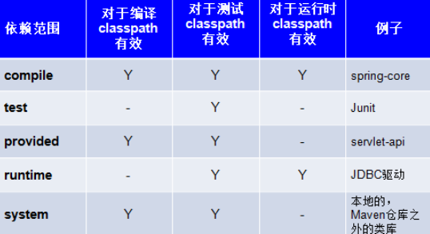
在 maven-web 工程中测试各 scop。
依赖范围由强到弱的顺序是:compile>provided>runtime>test
| scop | exp | useful |
|---|---|---|
| compile(默认值) | 默认引入 的 jar 包 | 编译、测试、运行 都有效 |
| provided | servlet-api 、 jsp-api | 编译、测试 有效, 运行时无效->防止和 tomcat 下 jar 冲突 |
| runtime | jdbc 驱动 jar 包 | 测试、运行 有效 |
| test | junit | 测试 有效 |
总结
maven 仓库
1、maven 仓库的类型有哪些?
2、maven 工程查找仓库的流程是什么?
3、本地仓库如何配置?
常用的 maven 命令
compile:编译
clean:清理
test:测试
package:打包
install:安装
坐标定义
在 pom.xml 中定义坐标,内容包括:groupId、artifactId、version,详细内容如下:
<!--项目名称,定义为组织名+项目名,类似包名-->
<groupId>zhangkx</groupId>
<!-- 模块名称 -->
<artifactId>XXZtravel</artifactId>
<!-- 当前项目版本号,snapshot 为快照版本即非正式版本,release 为正式发布版本 -->
<version>0.0.1-SNAPSHOT</version>
<packaging>war</packaging>
<!-- jar:执行 package 会打成 jar 包 -->
<!-- war:执行 package 会打成 war 包 -->
<!-- pom:用于 maven 工程的继承,通常父工程设置为 pom -->
pom 基本配置
pom.xml 是 Maven 项目的核心配置文件,位于每个工程的根目录,基本配置如下:
<project > :文件的根节点 .
<modelversion > : pom.xml 使用的对象模型版本
<groupId > :项目名称,一般写项目的域名
<artifactId > :模块名称,子项目名或模块名称
<version > :产品的版本号 .
<packaging > :打包类型,一般有 jar、war、pom 等
<name > :项目的显示名,常用于 Maven 生成的文档。
<description > :项目描述,常用于 Maven 生成的文档
<dependencies> :项目依赖构件配置,配置项目依赖构件的坐标
<build> :项目构建配置,配置编译、运行插件等。